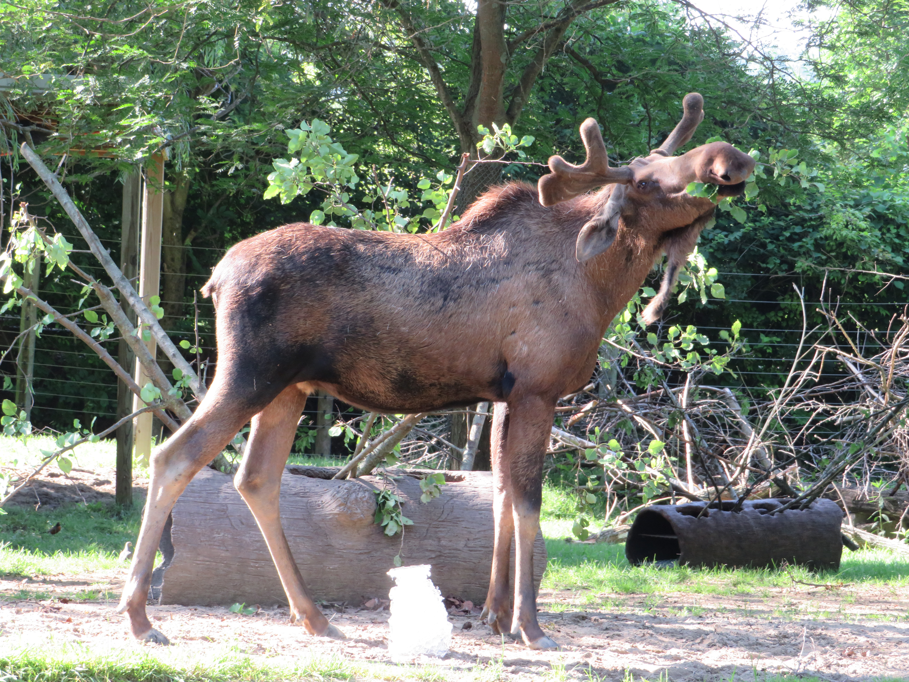
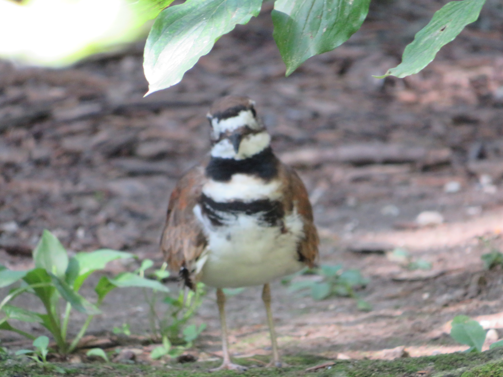
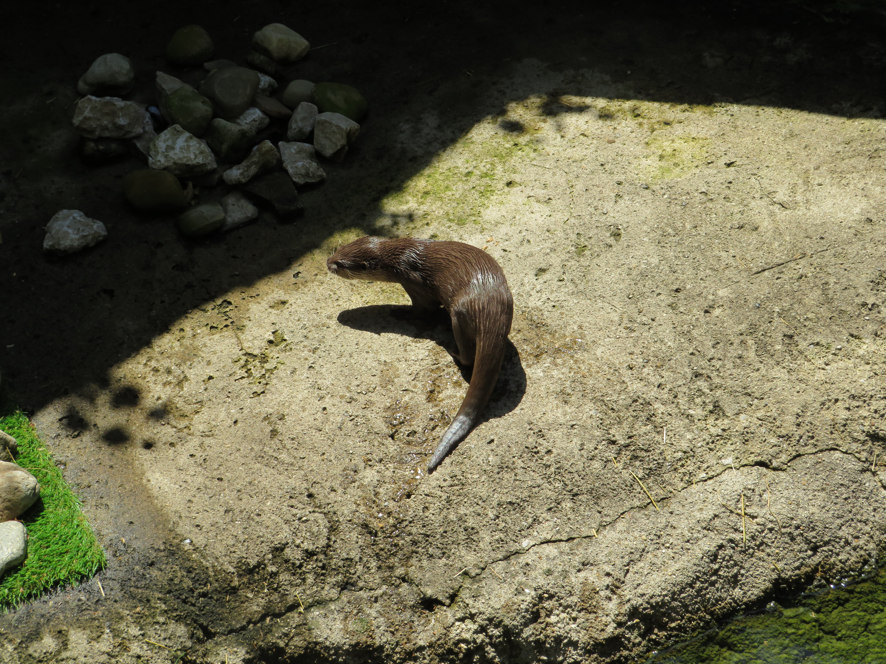
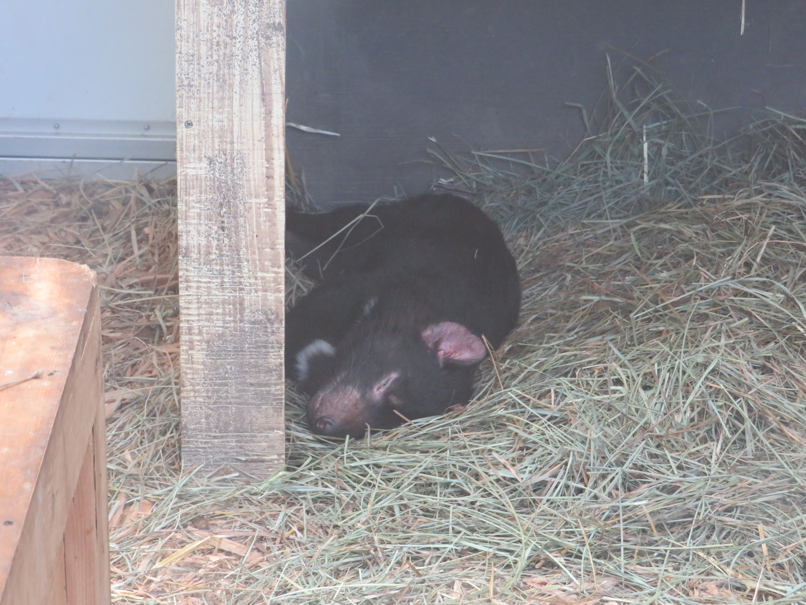
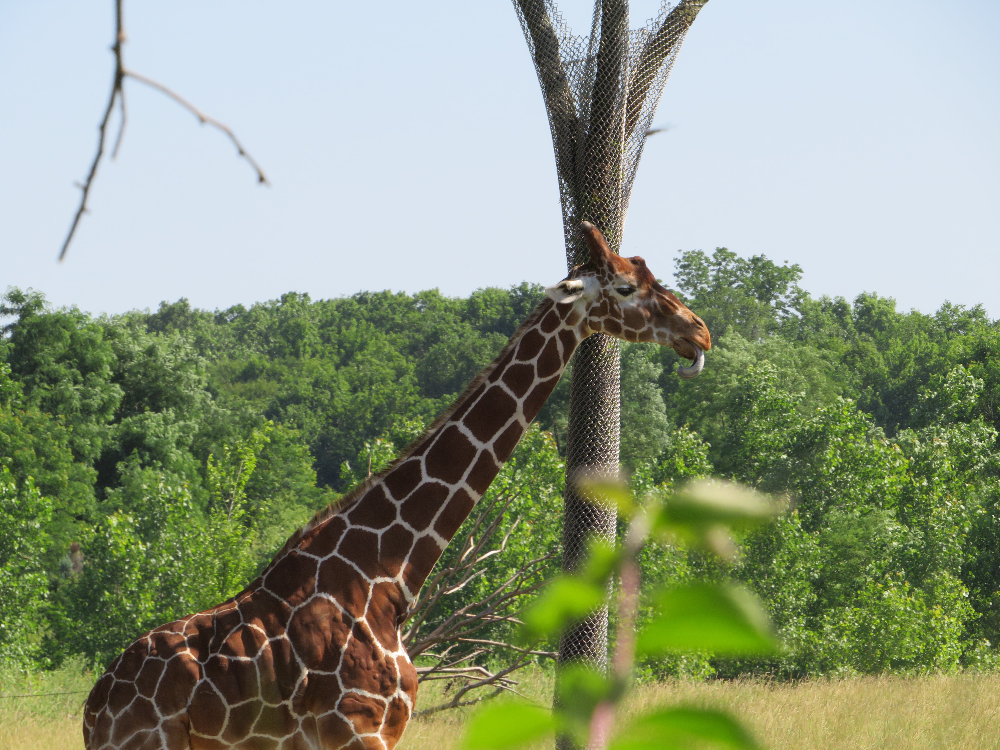

Hello! These are some animals I saw last year at the Columbus Zoo!

The Alces alces is my favorite animal, and the only reason I went to the
Columbus Zoo for my 19th birthday.

The Charadrius vociferus happened to be in their injured bird section, and it's my
favorite bird. I love their call and seeing them fly.

I had not heard of the Lutra cinerea before, but it was pretty cute. There were two
of them swimming around.

The Sarcophilus harrisii is my favorite marsupial, and I didn't even know that they had any
at the Columbus Zoo.

The Giraffa reticulata, or the Giraffes in general, were one of my favorite animals
at the zoo. They had a Masai Giraffe, which I was going to put on here but chose the wrong picture,
and I've never seen one at a zoo before. I believe the Pittsburgh Zoo might've gotten one in but I
could be mistaken.
Thank you for viewing my Columbus Zoo page!
Click here to go back to JoJo.